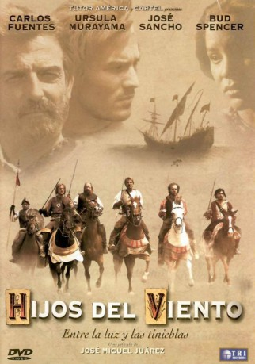

#8961 Söhne des Windes
 
 IMDB-Wertung: 5.5 / 10
IMDB-Wertung: 5.5 / 10  Metascore: 0
Metascore: 0 
Durante la conquista de México por los españoles, Rodri, un náufrago español y Tizcuitl, la joven y bella hija azteka del rey de Tlacopan, poderoso súbdito del emperador Moctezuma, viven una historia de amor en un momento de -salto de algo- histórico donde el fundamentalismo prevalecía sobre los sentimientos individuales.
Jahr: 2000
Dauer: 96 Minuten
FSK: 12
Land: Italien Studio: UFATonspuren:
Untertitel: Deutsch,
Auflösung: 1080p (1920x1040) Größe: 6696 MB
Genre: Drama, Abenteuer, Liebe
Regisseur: José Miguel Juárez
Drehbuch: Smile Production
Soundtrack: Pablo Arellano
Darsteller:
- José Sancho als Hernán Cortes
 Bud Spencer als Quintero
Bud Spencer als Quintero- Blanca Marsillach als
- Manuel Ojeda als
- Úrsula Murayama als Tizcuitl
- José Antonio Barón als Capitan Sandoval
- Milton Cortés als
- Carlos Fuentes als
- Jorge Galván als
- Anilú Pardo als
Datei: X:\HD-Western-2000-2015\Söhne des Windes (2000, FSK12, 1920x1040).mkv seit 16.05.2018
Festplatte: HD Eastern+Western
 Es gibt insgesamt 61 Filme in der Gruppe 'HD-Western-2000-2015'
Es gibt insgesamt 61 Filme in der Gruppe 'HD-Western-2000-2015'